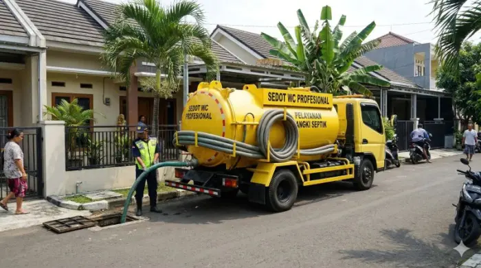

AWAS BANJIR LIMBAH!
PIPA MAMPET?
Jangan tunggu sampai mesin pompa jebol atau air kotor merusak properti Anda! Kami spesialis saluran mampet, sedot WC, dan deteksi pipa bocor di Ciledug.
Sistem Fair Play: Bayar setelah air lancar. Aman, cepat, bergaransi!

One Stop Center Ciledug
Banyak yang mencoba menghemat dengan menggunakan soda api, padahal bahan kimia tersebut dapat memanaskan dan melelehkan pipa PVC Anda! Kerusakan permanen justru memakan biaya bongkar yang sangat mahal.
Sebagai pakar Jasa Saluran Mampet Ciledug Raya, kami menggunakan mesin Rooter/Spiral Ridgid dari USA yang berputar menghancurkan sumbatan lemak, rambut, dan kotoran tanpa bahan kimia. 100% Tanpa Bongkar Lantai!
Bayar Setelah Tuntas
Sistem Fair Play! Kami tidak memungut DP sepeserpun. Pekerjaan gagal lancar? Anda tidak perlu bayar.
Tanpa Bongkar Keramik
Menggunakan Mesin Spiral
Deteksi Akurat
Acoustics Leak Detector
Jaminan Bergaransi
Ketenangan Konsumen
Sistem Fair Play
Tanpa DP, Bayar Di Tempat
Layanan Penanganan Menyeluruh
Dari saluran rumah tangga, sedot septic tank, hingga sedot limbah lemak (grease trap) khusus restoran di Jabodetabek.
Jasa Saluran Mampet Ciledug
Pelancaran pipa pembuangan air kotor, kamar mandi, selokan tersumbat kotoran/rambut. Pengerjaan cepat menggunakan spiral tanpa perlu bongkar keramik.
Tanya Biaya →Sedot WC Area Petukangan
Solusi tepat untuk kloset mampet, sedot septic tank penuh, atau pembersihan lumpur di wilayah Larangan hingga Petukangan dengan armada tangki mumpuni.
Panggil Truk Sedot →Deteksi Pipa Bocor Jaksel
Tagihan air melonjak misterius? Pakar deteksi menggunakan Acoustic Detector kami siap melacak sumber kebocoran pipa bawah lantai di Jakarta Selatan dengan akurasi tinggi.
Konsultasi Deteksi →Wastafel & Kitchen Sink Mampet
Lemak dapur mengeras di wastafel? Jasa pelancaran bak cuci piring mampet (kitchen sink) untuk rumah tangga maupun dapur restoran di Ciledug.
Atasi Sink Mampet →Sedot Limbah Lemak (Grease Trap)
Penanganan limbah lemak dan kotoran restoran (Grease Trap) di Kebayoran Lama. Servis teratur mencegah penyumbatan kronis pada instalasi bisnis F&B Anda.
Jadwal Sedot Limbah →Keran Mampet & Cuci Toren
Aliran air bersih dari keran kecil? Kami melayani service keran air mampet instalasi air bersih dan jasa cuci toren/tandon area Pesanggrahan.
Tanya Biaya Toren →Booking Teknisi Sekarang. Jangan Tunggu Meluap!
Konsultasikan kendala pipa bocor atau mampet Anda. Tim teknisi akan langsung meluncur ke lokasi di wilayah Ciledug Raya, Tangerang, dan Jakarta Selatan.
Tanya Jawab Singkat (FAQ)
Tekan tombol biru untuk mendengarkan jawaban terkait penanganan pipa bocor & mampet.
Berapa biaya jasa saluran mampet di Ciledug Raya?
Harga bersaing dengan sistem Fair Play, bayar setelah urusan selesai. Cek Tarif via WA
Apakah soda api aman untuk saluran mampet?
Tidak disarankan karena panas kimia bisa merusak PVC. Kami pakai alat spiral aman. Konsultasi WA
Area mana saja yang dijangkau oleh One Stop Center?
Fokus area Tangerang Raya, Jaksel, Bintaro, dan sekitarnya. Kirim Lokasi WA
Bagaimana mendeteksi pipa air bocor di dalam tembok?
Dengan frekuensi akustik mendeteksi asal bocor agar bongkaran seminim mungkin. Panggil Ahli Deteksi
Jangan tunggu sampai air limbah meluap dan merusak lantai properti Anda. Konsultasikan segera bersama One Stop Center - Spesialis Saluran Mampet & Pipa Bocor Ciledug untuk solusi aman, modern, dan tanpa perlu bongkar keramik.
Klik sekarang di https://one-stop-center-saluran-mampet-ciledug.vercel.app/ untuk klaim jadwal kedatangan tukang hari ini, bayar setelah urusan tuntas 100%!